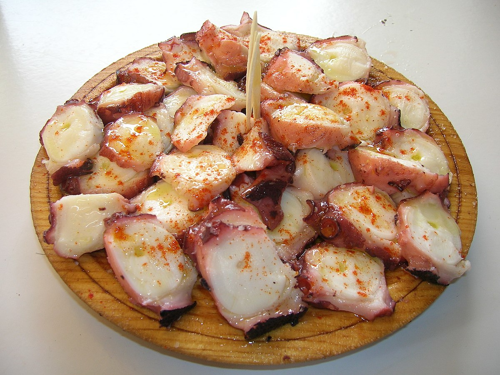
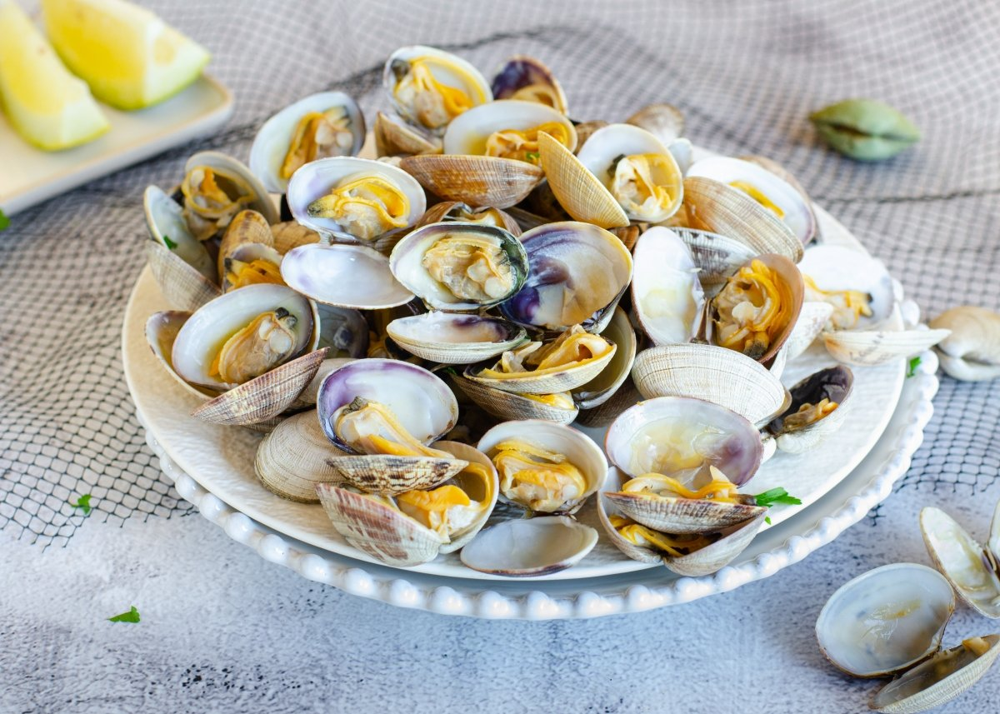
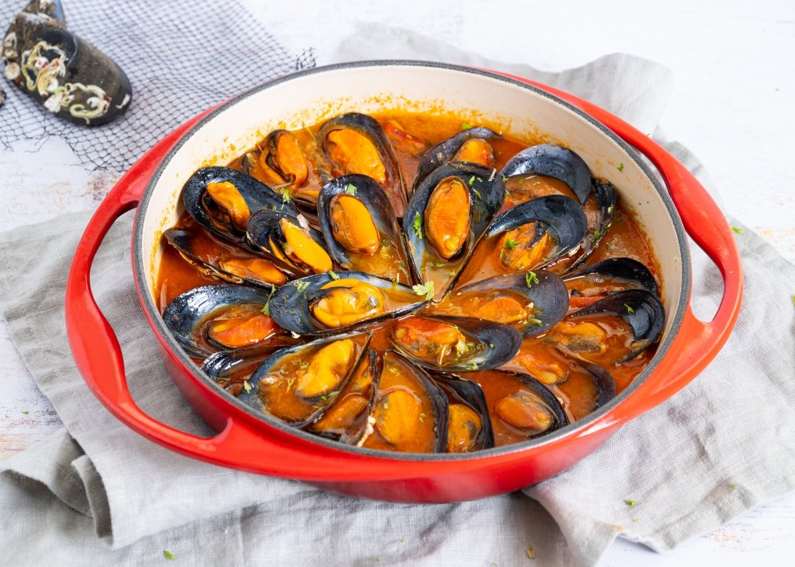

Camarones al Ajillo
Deliciosos camarones salteados con ajo y aceite de oliva.
Fácil
30 minutos

Ceviche de Mariscos
Fresco ceviche con pescado y mariscos en jugo de limón.
Medio
45 minutos

Langosta a la Parrilla
Langosta a la parrilla con mantequilla de ajo.
Difícil
60 minutos

Paella de Mariscos
Tradicional paella española con variedad de mariscos.
Difícil
90 minutos

Pulpo a la Gallega
Tradicional pulpo a la gallega con patatas y pimentón.
Medio
60 minutos

Almejas a la Marinera
Almejas en salsa marinera con vino blanco y ajo.
Fácil
40 minutos

Mejillones al Vapor
Mejillones al vapor con vino blanco y hierbas aromáticas.
Fácil
30 minutos